Vježbe i Projekti
Ovdje su prikazane slike i multimedijski elementi zadataka s vježbi i projektnih zadataka koje sam radila tokom semestra na ovom kolegiju.
Vježba 1: Font
Izrada vlastitog fonta za svoje ime i prezime.
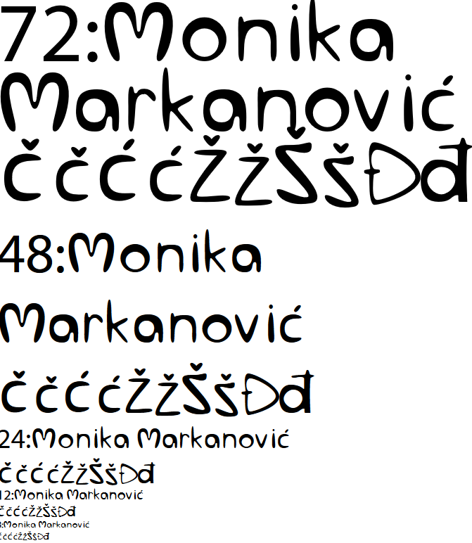
Vježba 2: Bezierova krivulja
Crtanje Bezierovih krivulja u koordinatnom sustavu
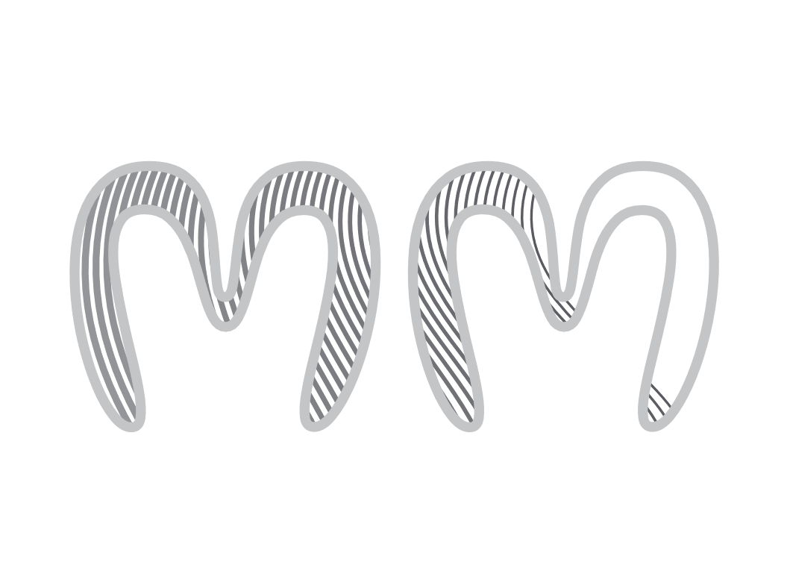
Vježba 3: Boja, transformacije
Crtanje oblika uz pomoću krivulja
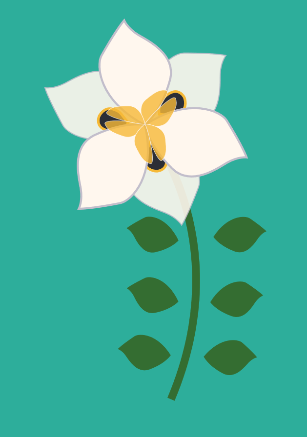
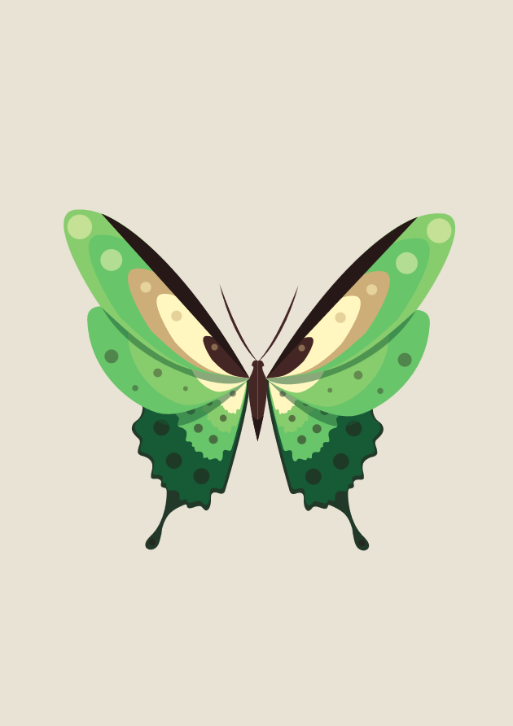
Vježba 4: Gradijenti, transparencija
Izrada složenih objekata uz pomoću gradijenata i transparencija
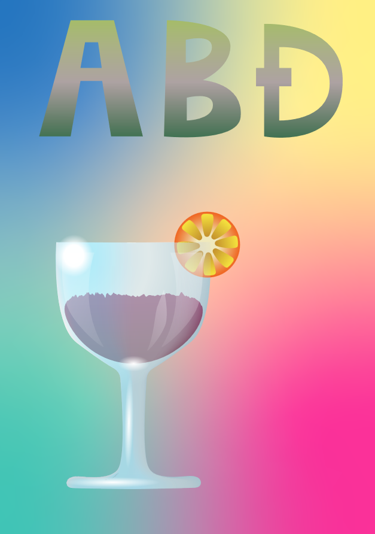
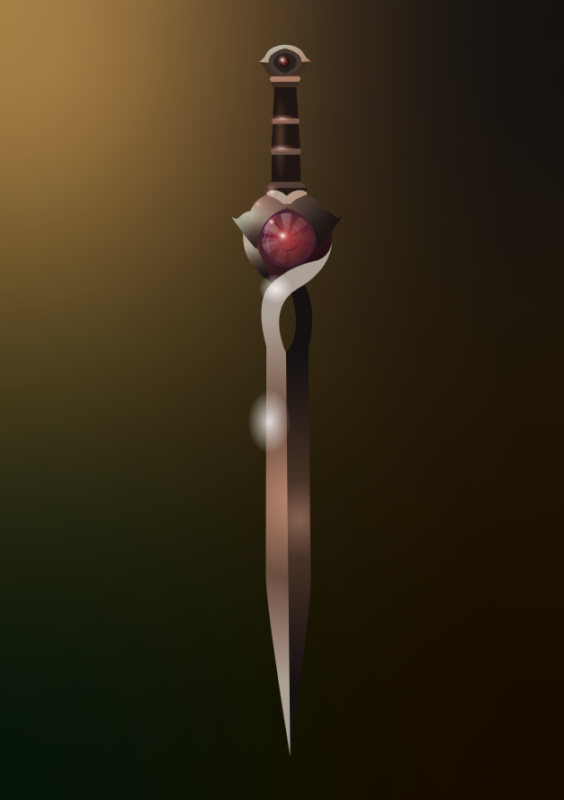
Projektni zadatak 1
Projektni zadatak u illustratoru
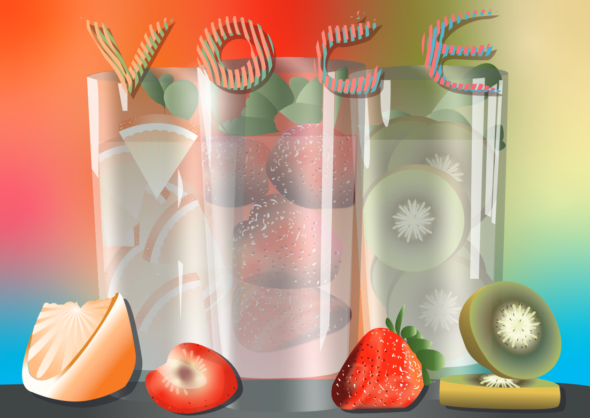
Vježba 5: Retuširanje
Retuširanje i poboljšavanje fotografija u Photoshopu
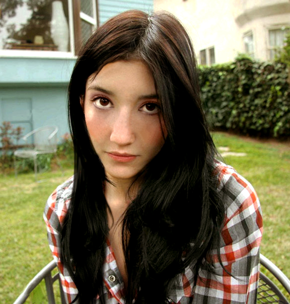
Vježba 6: Koloriranje
Dodavanje boja
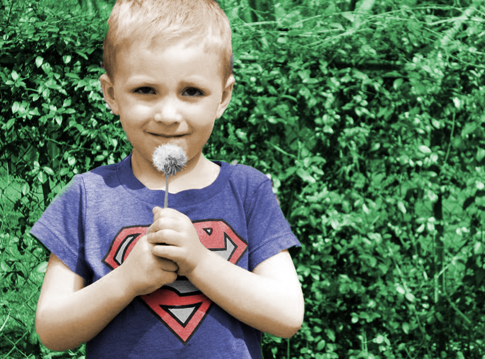
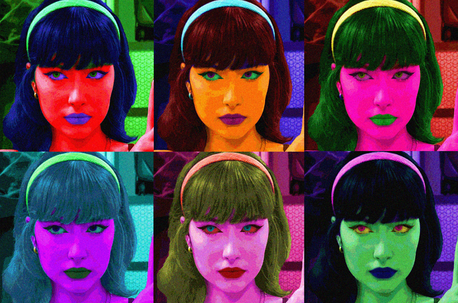
Vježba 7: Fotomontaža
Kombiniranje više fotografija
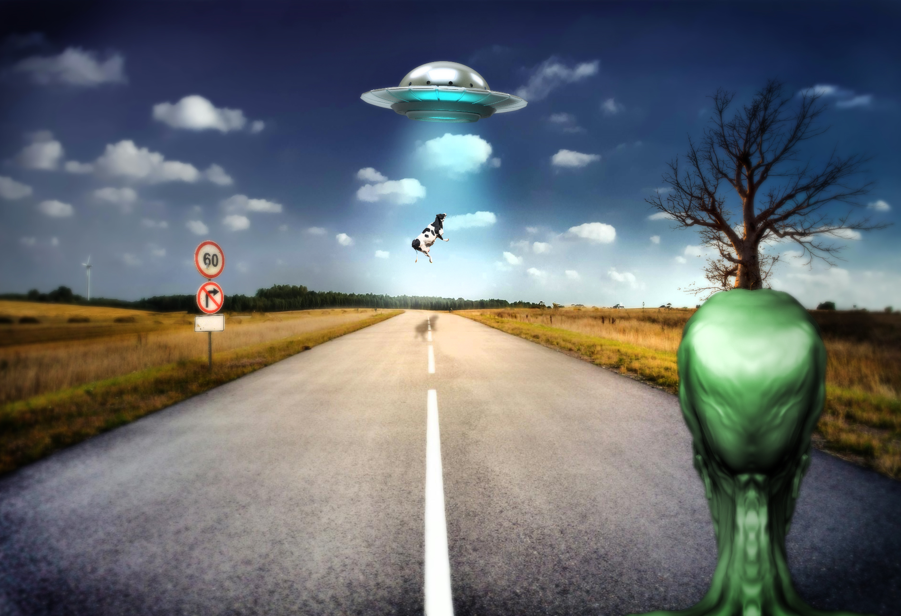
Projektni zadatak 2
Projektni zadatak u Photoshopu
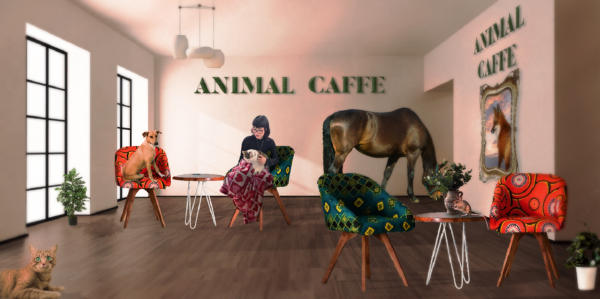
Vježba 8: Cinemagraf
Videoisječak, spaja pokretnu i statičnu sliku.
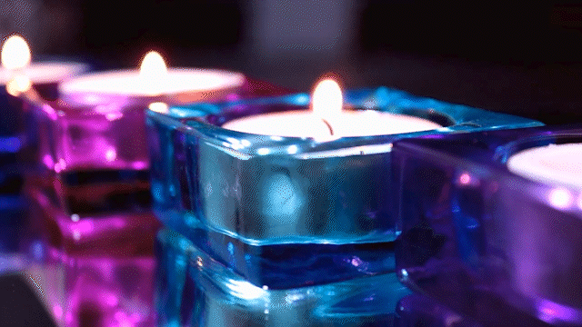

Vježba 9: Video obrada
Videoisječak uz efekte i zvuk
Vježba 10 i 11: Web Stranica
Moja prva web stranica.